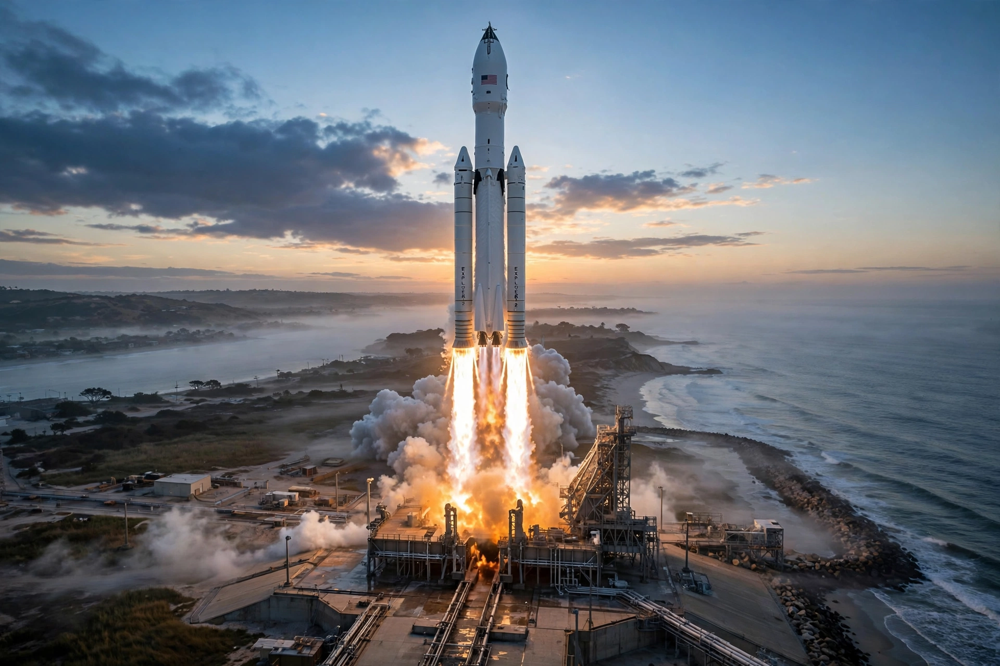

Vulcan Centaur
From Wikipedia, the free encyclopedia
| Vulcan Centaur | |
|---|---|
| Manufacturer | United Launch Alliance |
| First flight | 8 January 2024 |
| Engines | 2× BE-4 (Blue Origin) + up to 6 solid boosters |
| Replaces | Atlas V, Delta IV |

Vulcan's first launch.Vulcan Centaur is a two-stage heavy-lift launch vehicle developed by United Launch Alliance to replace both the Atlas V and Delta IV, ending reliance on the Russian RD-180 engine by flying Blue Origin's American BE-4 methane engines. Its first flight on 8 January 2024 was near-perfect, sending Astrobotic's Peregrine lunar lander toward the Moon (the lander later failed for its own reasons) and certifying the design's promise.
Vulcan combines a methalox booster with the veteran Centaur upper stage and up to six GEM-63XL solid boosters, spanning the performance of the whole Atlas/Delta range in one family. Its second flight (October 2024) survived a dramatic solid-booster nozzle failure — an anomaly it flew through — clearing the path to national-security certification in 2025.
Competition
Vulcan is ULA's answer to SpaceX: not reusable (a future 'SMART' scheme would recover only the engine section), but dependable, high-energy and politically indispensable as America's second assured-access launcher. Its manifest is dominated by Amazon Kuiper constellation batches and Space Force missions.